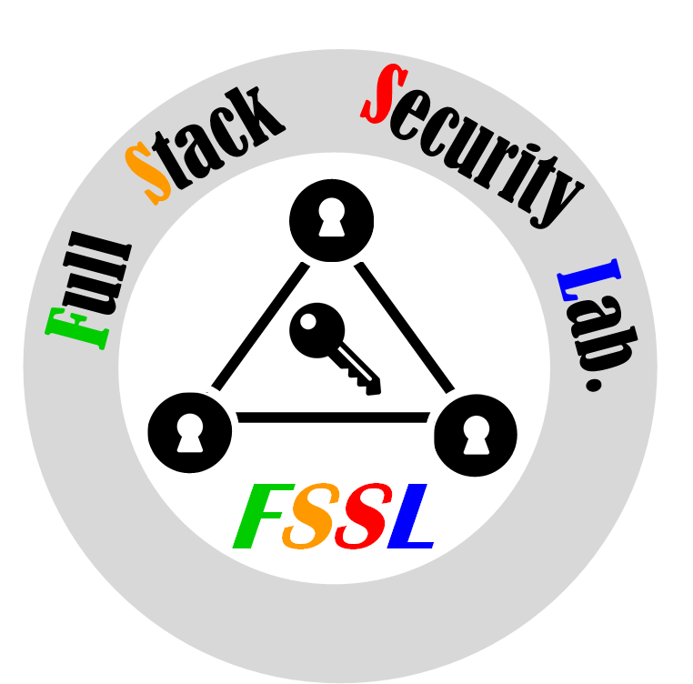

FullStack Security Lab
|  |
Welcome to FullStack Security Lab!
About
FSSL (FullStack Security Lab) at Syracuse University focuses on cybersecurity research on emerging web services and off-the-shelf hardware products. Our research takes the approach of security measurement and analysis towards better understand the (in)security of the targeted emerging computer systems.